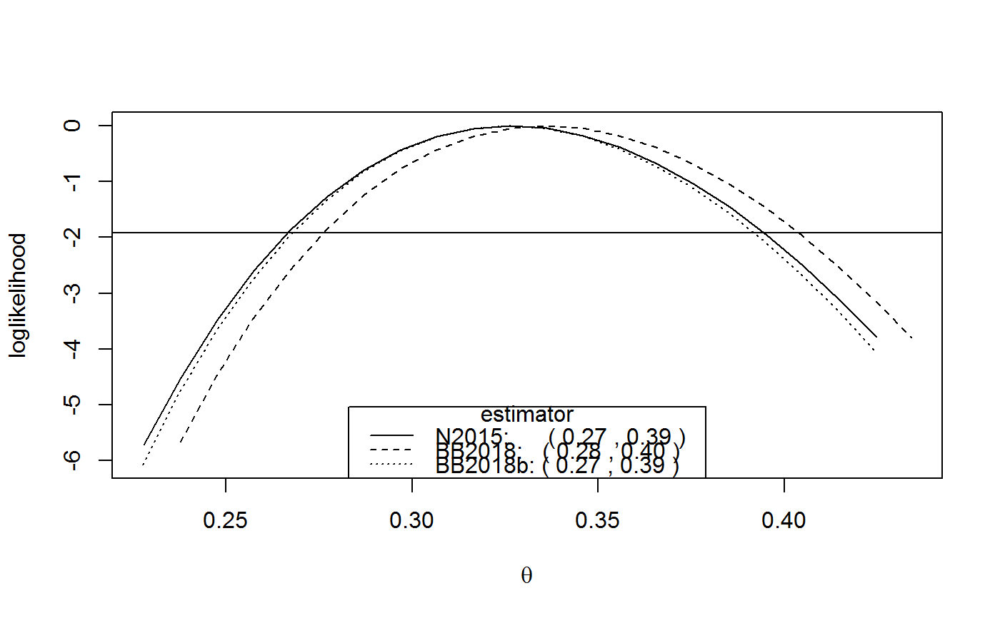

R/confidence_intervals.R
confint.spm.Rdconfint method for objects of class c("spm", "exdex").
Computes confidence intervals for \(\theta\) based on an object returned
from spm. Two types of interval may be returned:
(a) intervals that are based on approximate large-sample normality of the
estimators of \(\theta\) (or of \(\log\theta\) if
conf_scale = "log"), and which are symmetric about the respective
point estimates, and (b) likelihood-based intervals based on an adjustment
of a naive (pseudo-) loglikelihood, using the
adjust_loglik function in the
chandwich package.
# S3 method for spm confint(object, parm = "theta", level = 0.95, maxima = c("sliding", "disjoint"), interval_type = c("norm", "lik", "both"), conf_scale = c("theta", "log"), constrain = TRUE, bias_adjust = TRUE, type = c("vertical", "cholesky", "spectral", "none"), ...)
| object | An object of class |
|---|---|
| parm | Specifies which parameter is to be given a confidence interval. Here there is only one option: the extremal index \(\theta\). |
| level | A numeric scalar in (0, 1). The confidence level required. |
| maxima | A character scalar specifying whether to estimate confidence intervals based on sliding maxima or disjoint maxima. |
| interval_type | A character scalar: |
| conf_scale | A character scalar. If If Any bias-adjustment requested in the original call to |
| constrain | A logical scalar. If |
| bias_adjust | A logical scalar. If If |
| type | A character scalar. The argument |
| ... | Further arguments. None are used currently. |
A list of class c("confint_spm", "exdex") containing the following components.
A matrix with columns giving the lower and upper confidence
limits. These are labelled as (1 - level)/2 and 1 - (1 - level)/2 in
% (by default 2.5% and 97.5%).
The row names are a concatenation of the variant of the estimator
(N2015 for Northrop (2015), BB2018 for
Berghaus and Bucher (2018)), BB2018b for the modified
(by subtracting 1 / b) Berghaus and Bucher (2018)
and the type of interval (norm for symmetric and lik for
likelihood-based).
The object returned from
conf_intervals that contains information about
the adjusted loglikelihood for the Northrop (2015) variant of the
estimator.
The object returned from
conf_intervals that contains information about
the adjusted loglikelihood for the Berghaus and Bucher (2018) variant of
the estimator.
The object returned from
conf_intervals that contains information about
the adjusted loglikelihood for the modified Berghaus and Bucher (2018)
variant of the estimator.
The call to spm.
The input object.
The input maxima.
The relevant estimates of \(\theta\) returned from
adjust_loglik. These are equal to
object$theta_sl if maxima = "sliding",
object$theta_dj if maxima = "disjoint",
which provides a check that the results are correct.
The likelihood-based intervals are estimated using the
adjust_loglik function in the
chandwich package, followed by a call to
conf_intervals.
This adjusts the naive (pseudo-)loglikelihood so that the curvature of
the adjust loglikelihood agrees with the estimated standard errors of
the estimators. The option type = "none" should not be used in
practice because the resulting confidence intervals will be wrong.
In particular, in the intervals based on sliding maxima will provide
vast underestimates of uncertainty.
If object$se contains NAs, because the block size b
was too small or too large in the call to spm then
confidence intervals cannot be estimated. A matrix of NAs
will be returned. See the Details section of the
spm documentation for more information.
Northrop, P. J. (2015) An efficient semiparametric maxima estimator of the extremal index. Extremes 18(4), 585-603. https://doi.org/10.1007/s10687-015-0221-5
Berghaus, B., Bucher, A. (2018) Weak convergence of a pseudo maximum likelihood estimator for the extremal index. Ann. Statist. 46(5), 2307-2335. https://doi.org/10.1214/17-AOS1621
plot.confint_spm: plot method for
class c("confint_spm", "exdex").
#> 2.5 % 97.5 % #> N2015norm 0.2002191 0.2782277 #> BB2018norm 0.2756477 0.3399961 #> BB2018bnorm 0.2256477 0.2899961#> 2.5 % 97.5 % #> N2015lik 0.2028802 0.2797593 #> BB2018lik 0.2771474 0.3407445 #> BB2018blik 0.2321583 0.2853566plot(cis)#> 2.5 % 97.5 % #> N2015norm 0.2607322 0.3919727 #> BB2018norm 0.2704307 0.4014686 #> BB2018bnorm 0.2604307 0.3914686#> 2.5 % 97.5 % #> N2015lik 0.2664968 0.3946247 #> BB2018lik 0.2760426 0.4040249 #> BB2018blik 0.2678191 0.3919123plot(cis)